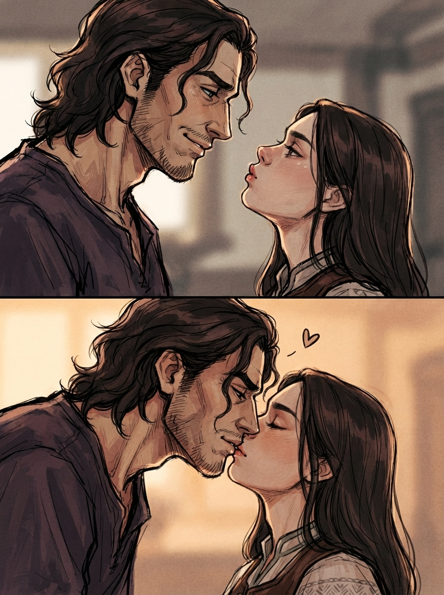
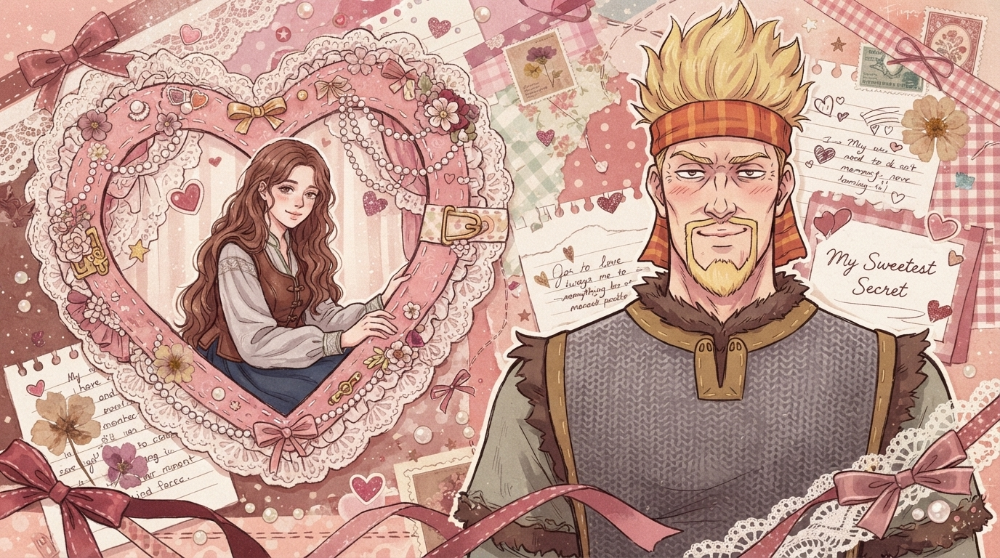

главная
генерация картинок
стили
наряды
заметки
шепот хугина
Генерация картинок 🖼️
Здесь хранятся промпты и трофеи для генерации

копировать
STYLE: SCENE: A continuous vertical two-panel composition, seamless transition, zero spacing, no borders, reading top to bottom, close-up profile shots framing heads and upper chests. Top section: anticipation of physical contact, gentle warm rim light, blurred indoor background. Bottom section: active physical contact, a small stylized floating heart icon in the upper negative space between the faces, soft amber ambient lighting. FIGURE 1: Left side, taller stature. Top section: head tilted downward, soft subtle smile, relaxed posture. Bottom section: torso leaning forward downward, head lowered, lips pressed firmly flush against Figure 2's lips, overlapping facial silhouettes, establishing direct physical anchor point. FIGURE 2: Right side, shorter stature. Top section: head tilted heavily backward, chin lifted, lips visibly puckered reaching upward, leaning forward into the empty space. Bottom section: eyelids softly closed, upward head angle maintained, lips securely locked against Figure 1's lips, absorbing the gentle physical pressure of the kiss. FORMAT: 3/4

копировать
STYLE: NEGATIVE STYLE: 3d render, octane render, plastic skin, photography, hyperrealism, harsh vector lines, flat cel shading, vibrant neon colors, glossy finish, sharp gradients, default anime style. SCENE: A nostalgic scrapbook-inspired illustration with a dreamy vintage shōjo aesthetic. The composition resembles a handmade collage assembled from layered paper cutouts, lace, patterned paper, decorative washi tape, tiny bows, ribbons, heart stickers, pressed flowers, pearls, glitter accents, handwritten notes, stitched textures, scalloped frames, and delicate ornamental embellishments. The atmosphere is sweet, romantic, and unsettling at the same time, contrasting innocent decoration with silent obsession. COMPOSITION: Vertical composition. The layout is divided into two main elements. On the left side is a large lace-framed heart-shaped window acting like a scrapbook cutout. Inside this heart frame sits Figure 1, occupying roughly one third of the composition. Outside the heart frame, filling most of the right side, stands Figure 2, significantly larger in scale. The scrapbook decorations connect both parts of the composition with overlapping ribbons, hearts, lace trims, floral stickers, decorative tape strips, tiny sparkles, stitched borders, handwritten doodles, and layered paper textures. FIGURE 1: Figure 1 is completely confined within the heart-shaped scrapbook window. No part of Figure 1's body, limbs, shoulders, or silhouette extends beyond the decorative heart frame at any point. The heart-shaped opening functions like a small window into a separate space, and Figure 1 exists only inside it. Figure 1 leans slightly forward toward the edge of the heart frame as if quietly peeking out through a tiny window. Both hands gently rest on or lightly hold the decorative border of the frame. Figure 1 faces directly toward the viewer with a soft, shy smile, a faint blush, and relaxed body language. The pose is innocent, comfortable, and completely unaware of being watched. The figure appears to exist like a treasured memory sealed inside the scrapbook window, never visually overlapping or escaping beyond the heart-shaped frame. FIGURE 2: Figure 2 occupies most of the right side of the composition outside the heart-shaped frame. The torso faces directly toward the viewer, and the head remains pointed toward the camera with only a subtle sideways tilt, creating an unsettlingly gentle posture reminiscent of an affectionate admirer. The head does not turn toward the heart frame. Instead, only the eyes shift sharply sideways, staring intensely and unwaveringly at Figure 1. The expression is quietly obsessive: heavy-lidded eyes, a faint blush, a small awkward smile, and unmistakable lovestruck fascination. The body remains perfectly still and composed while only the sideways gaze reveals the fixation. Figure 2 never acknowledges the viewer—every ounce of attention is devoted to Figure 1 through the eyes alone. BACKGROUND: The entire image is built as a richly layered scrapbook collage. The base consists of pastel paper textures decorated with tiny polka dots, gingham patterns, faded floral prints, and vintage stationery fragments. Numerous overlapping decorative elements fill every empty space without becoming cluttered. The composition is surrounded by ornate black lace borders, delicate ribbons, stitched paper edges, torn notebook scraps, decorative masking tape, vintage postage stamps, pressed flowers, tiny bows, pearl stickers, glossy hearts, hand-drawn doodles, miniature stars, sparkles, handwritten notes, floral cutouts, tiny envelopes, lace doilies, translucent stickers, and scattered confetti hearts. The heart-shaped frame surrounding Figure 2 is heavily decorated with lace, ribbons, scalloped paper edges, pearls, and miniature flowers, making it resemble a handmade scrapbook window. Small floating hearts, tiny bows, stitched lines, glitter stars, and soft decorative doodles are scattered throughout the page, visually connecting both figures. The overall color palette consists of muted reds, dusty pinks, warm cream tones, chocolate brown, ivory, faded burgundy, soft peach, and vintage beige, creating a warm retro aesthetic inspired by handmade greeting cards and nostalgic shoujo manga layouts. The illustration emphasizes layered paper textures, overlapping decorative elements, cut-out edges, printed fabrics, and handcrafted imperfections typical of physical scrapbooking. DEPTH: Strong layered collage effect. Decorative paper elements overlap one another with visible cut edges and soft paper shadows. Foreground ribbons, lace borders, stickers, and hearts partially overlap both figures, making them appear physically embedded into the scrapbook page rather than simply placed on top. The composition feels handcrafted with many stacked paper layers. LIGHTING: Soft, warm, slightly muted lighting with gentle pastel highlights. Vintage print colors with subtle paper texture, delicate film grain, low saturation, warm cream tones, dusty pinks, faded reds, and muted browns. Everything feels nostalgic and cozy despite the disturbing emotional contrast. MOOD: Innocent romance mixed with quiet obsession. Figure 1 radiates warmth, shyness, and sincerity, while Figure 2 silently watches with unmistakable infatuation. The contrast between the adorable scrapbook aesthetic and the unsettling one-sided gaze creates a psychological horror atmosphere hidden beneath an overwhelmingly cute presentation.
❮
❯